✺
Central de estudos
Leia o resumo, revise conceitos e observe as imagens do livro.
Uma jornada pelas manifestações populares brasileiras, pela dança e pela literatura de cordel. Estude no seu ritmo e transforme conhecimento em brincadeira.
Escolha uma experiência para continuar.
Leia o resumo, revise conceitos e observe as imagens do livro.
Teste o que aprendeu com perguntas, dicas e desafios por nível.
Combine, memorize, relacione e descubra palavras importantes.
Preste atenção aos detalhes das imagens: os personagens, as roupas, os instrumentos, as formas de impressão e os elementos das festas populares ajudam a compreender a cultura.
Conhecer tradições é descobrir como diferentes comunidades contam suas histórias e mantêm vivas suas expressões culturais.
Resumo elaborado a partir das fotografias recebidas.
As danças folclóricas são tradições de uma comunidade. Elas preservam a identidade cultural de um grupo por meio de práticas corporais criadas coletivamente, mantidas e repetidas ao longo do tempo. Muitas têm raízes em manifestações populares que surgiram na Idade Média e foram adaptadas durante os séculos.
No Norte do Brasil, uma das principais danças ligadas ao Festival de Parintins é o auto do boi. O texto informa que a festa tem registros desde 1840, no Recife, Nordeste, e reúne elementos de culturas indígenas, europeias e africanas.
Em diferentes estados, a manifestação recebe nomes como boi-bumbá, boi pintadinho, bumba meu boi e cavalo marinho. O boi é construído com madeira e tecidos. Os festejos contam a história de sua morte e ressurreição, seguindo um enredo transmitido entre gerações.
\nO livro também apresenta o balaio como uma dança folclórica tradicional do Rio Grande do Sul. O dançarino é chamado de peão e a dançarina de prenda. Os pares giram em sentido anti-horário e formam uma roda. Entre os movimentos estão:
O texto explica que as danças populares brasileiras continuam evoluindo, incorporando novas influências e mantendo vivas as tradições das comunidades.
É uma manifestação cultural popular brasileira desenvolvida principalmente no Nordeste. Deriva do trovadorismo, tradição literária que chegou ao Brasil com os colonizadores portugueses e se caracterizava pela transmissão oral de poemas narrativos.
O cordel apresenta histórias sobre a vida no Sertão, figuras populares e lendas regionais. Entre seus personagens aparecem João Grilo e Pedro Malasartes, associados à astúcia, esperteza e capacidade de adaptação.
As histórias refletem o cotidiano e as lutas do povo nordestino e de outras regiões do Brasil, podendo representar resistência e busca por justiça.
As imagens do material mostram uma reprodução de xilogravura de Stênio Diniz. A página identifica a imagem como uma reprodução de xilogravura de Stênio Diniz. O trecho visível também destaca que a combinação de palavras e ilustrações ajuda a manter a tradição do cordel viva entre gerações.
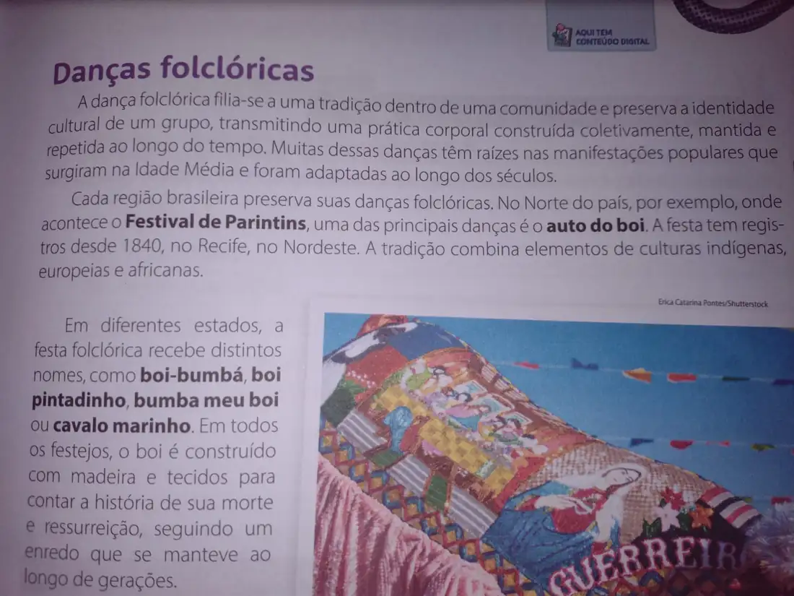
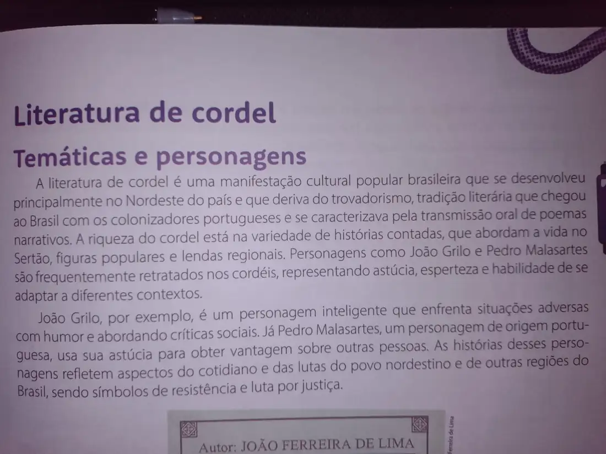
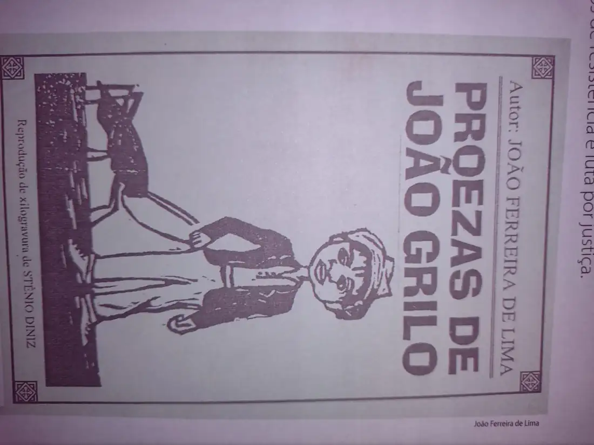
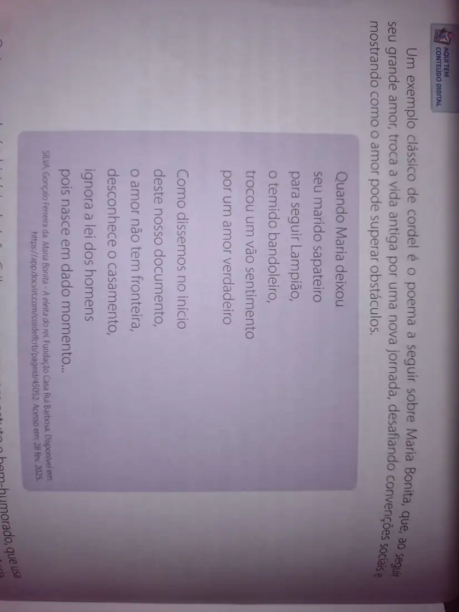
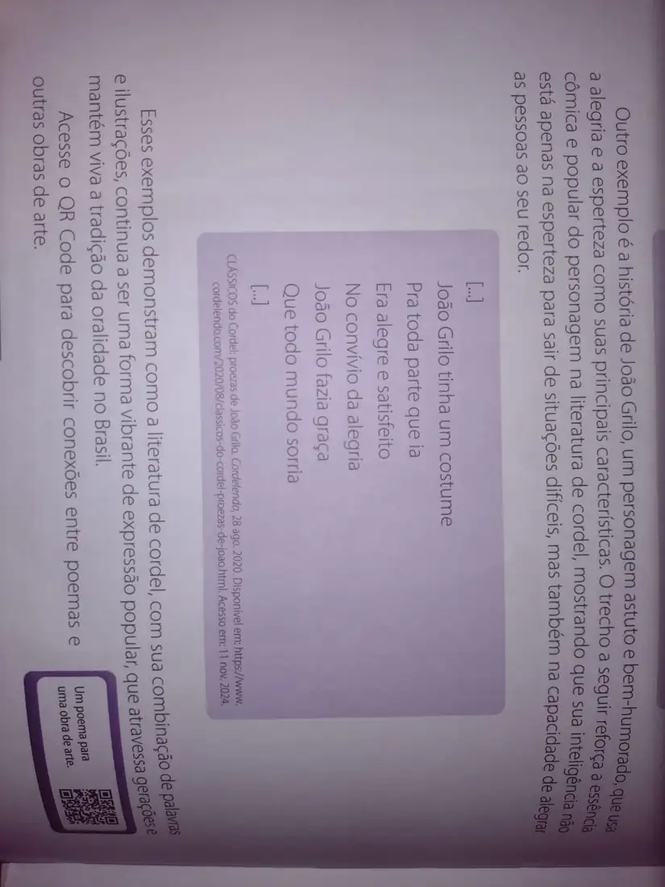
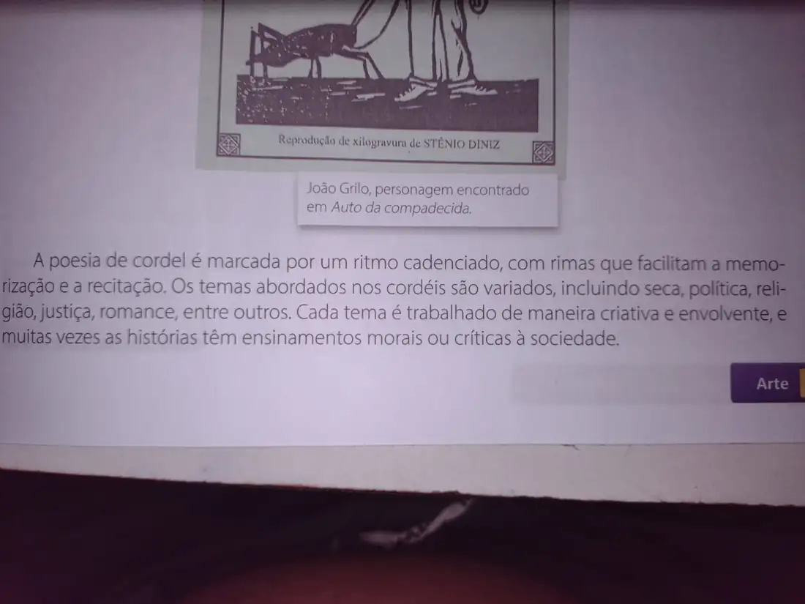
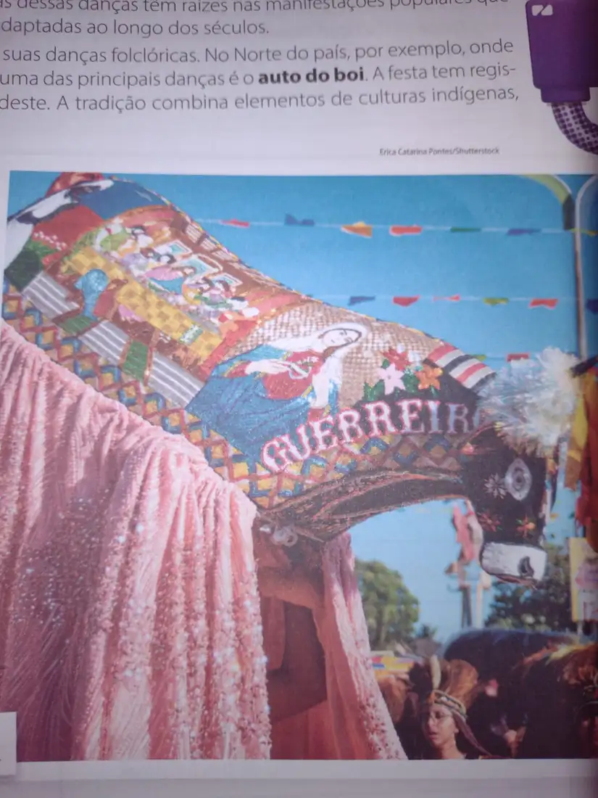
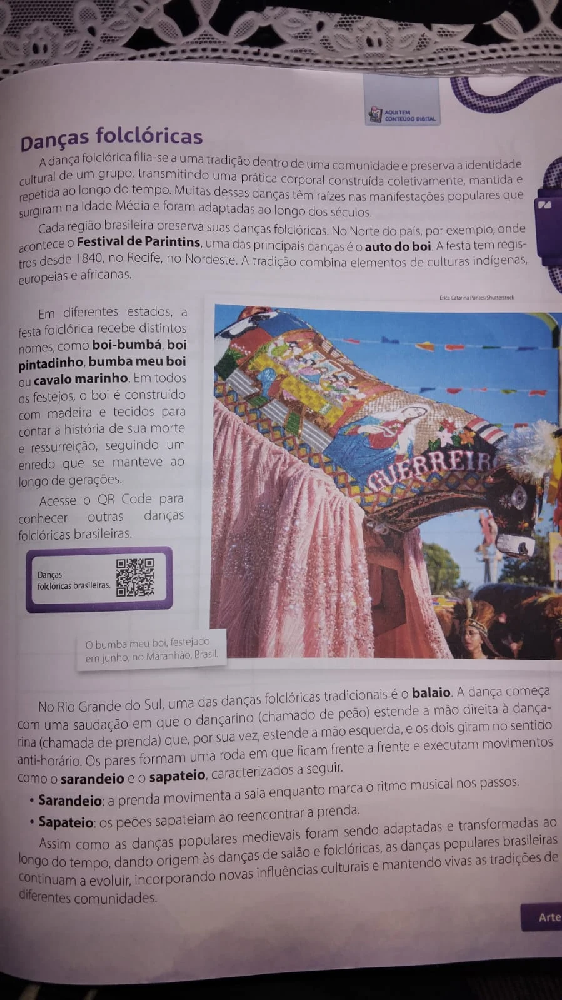
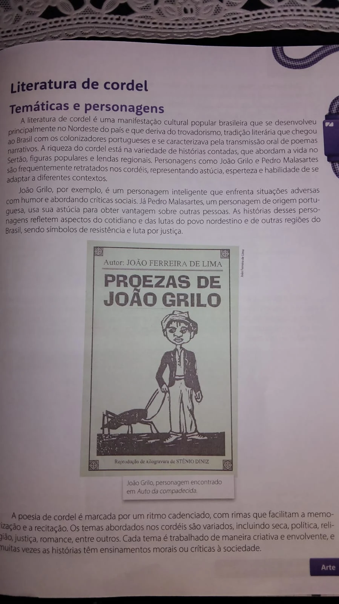
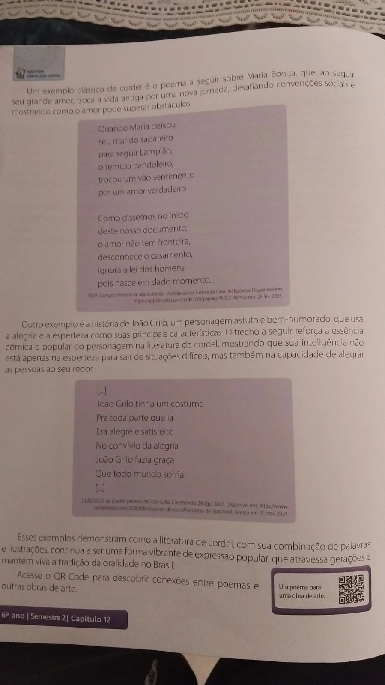
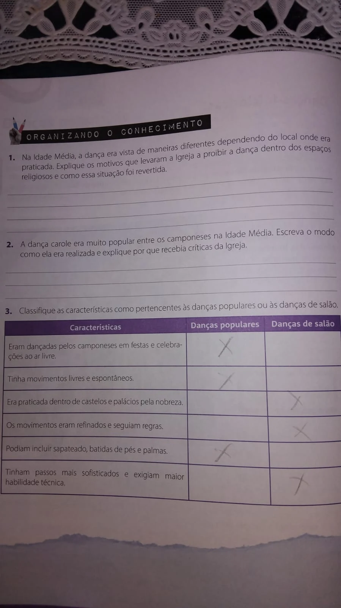
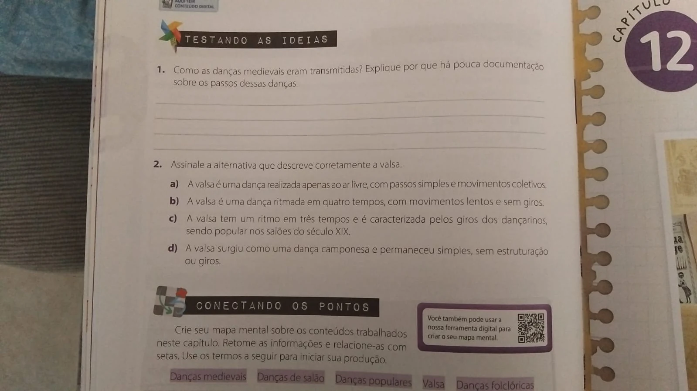
1. A pergunta trata da dança na Idade Média e da posição da Igreja. As páginas explicativas que fundamentam essa resposta não vieram nas fotografias. Para não inventar uma justificativa que talvez não corresponda ao livro, esta resposta fica pendente da página anterior do capítulo.
2. A pergunta sobre a dança carole também depende da explicação da página anterior, que deve informar como a dança era realizada e qual crítica a Igreja fazia. Não vou apresentar uma resposta como certa sem esse trecho.
3. Classificação:
1. A questão pede como as danças medievais eram transmitidas e por que há pouca documentação. A explicação mais provável é a transmissão pela prática, observação e repetição, com pouca anotação escrita das manifestações populares. Porém, a página explicativa sobre esse assunto não foi enviada; confirme a formulação no trecho anterior do capítulo antes de memorizar.
2. Alternativa C: a valsa tem ritmo em três tempos, é caracterizada pelos giros dos dançarinos e foi popular nos salões do século XIX.
Todas as perguntas da rodada serão apresentadas. A cada nova partida, a ordem muda.
O cronômetro e as vidas funcionam no quiz principal. Os outros jogos são atividades de treino sem pressão de tempo.
Pratique os conceitos da matéria de um jeito diferente.